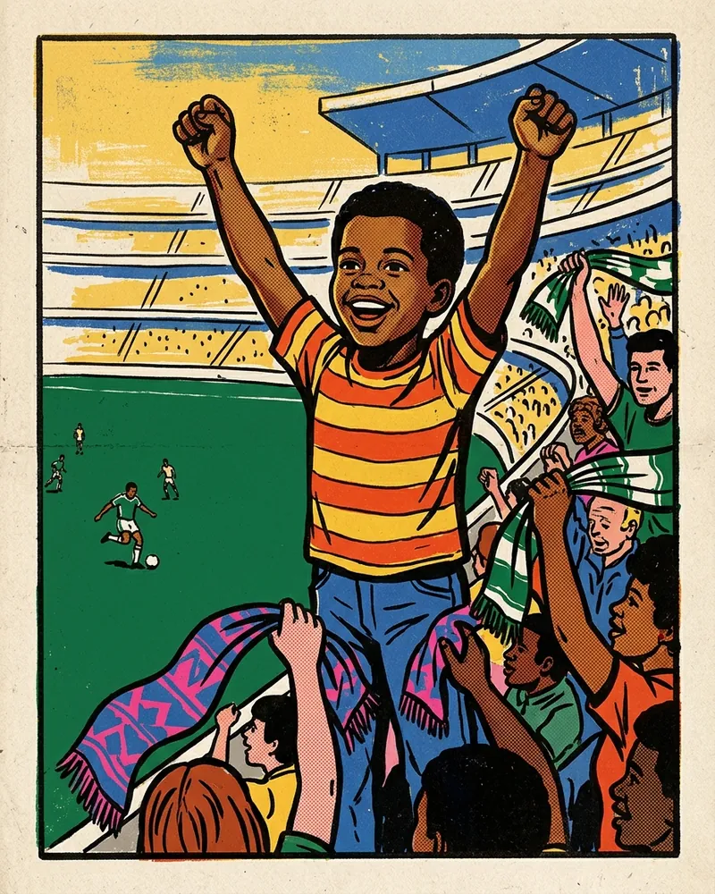

Gordon Bellamy, two eras
Two games built from your own records, your own words, and 147 scrapbook photos. Play either first. The 1994 Rookie of the Year trophy carries you from one to the other.

1970 to 2010 Create-a-player Build Gordon moment by moment, from Pele at RFK to the IGDA. 16 chapters. Press start
Rookie of the Year, 1994, Electronic Arts